These pictures were taken at The Titanic Official Movie Tour at Wembley Exhibition Hall 2 in 1998. The touring exhibition brought together rooms, costumes, props and models from James Cameron’s Titanic. For pictures of the film set itself, see my Titanic Movie Set Pictures page.
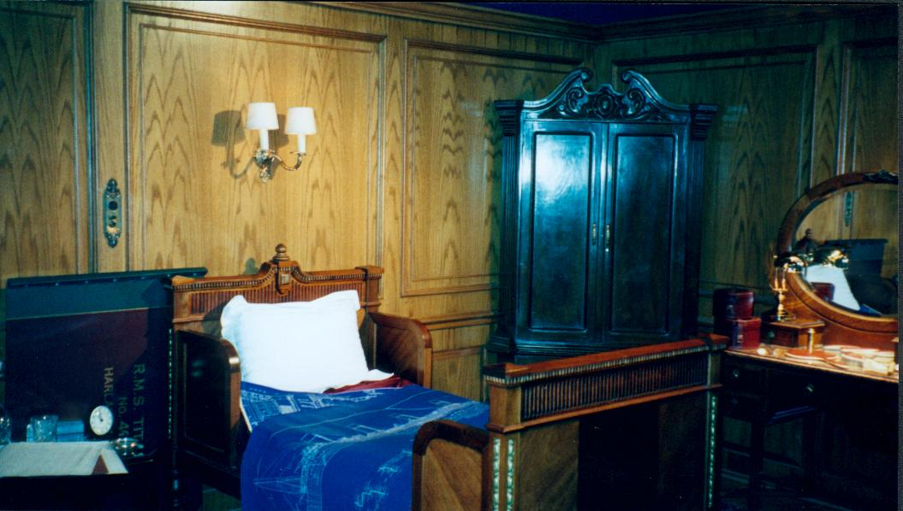
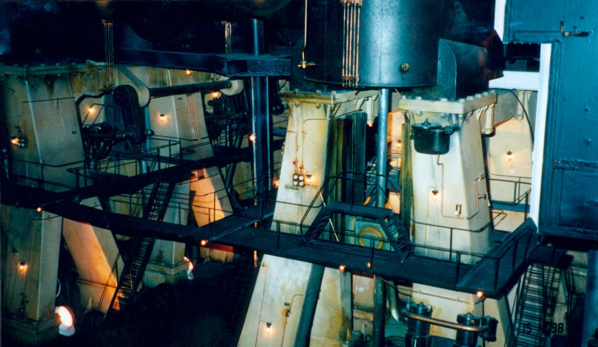
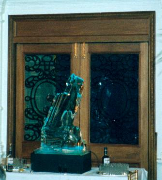
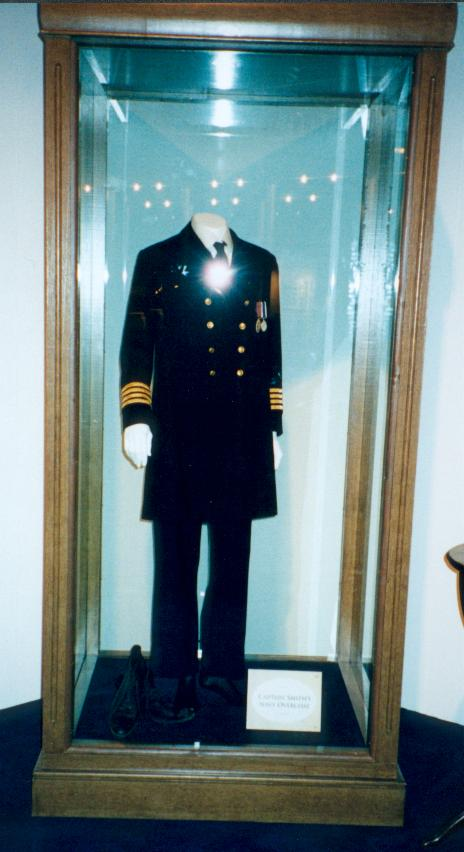
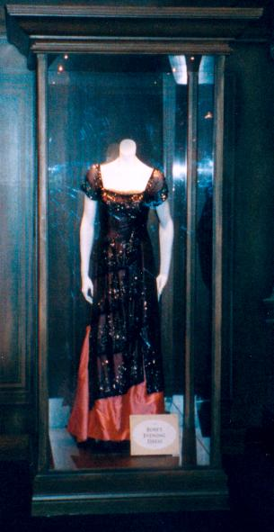
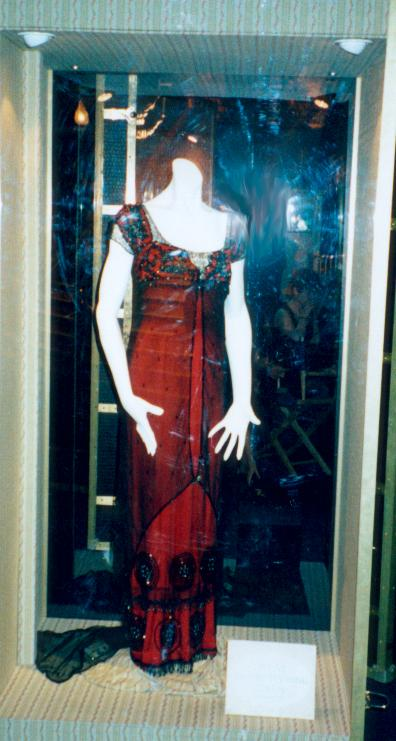
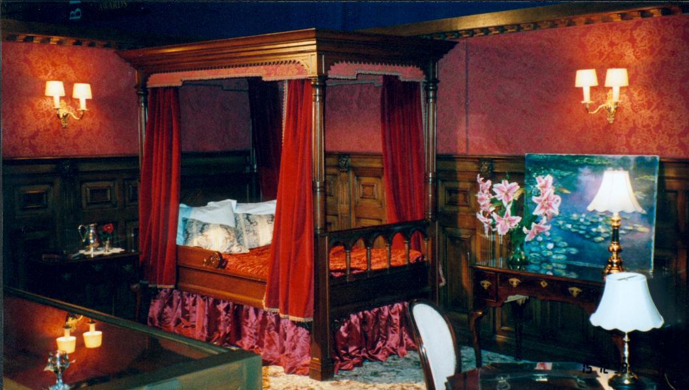
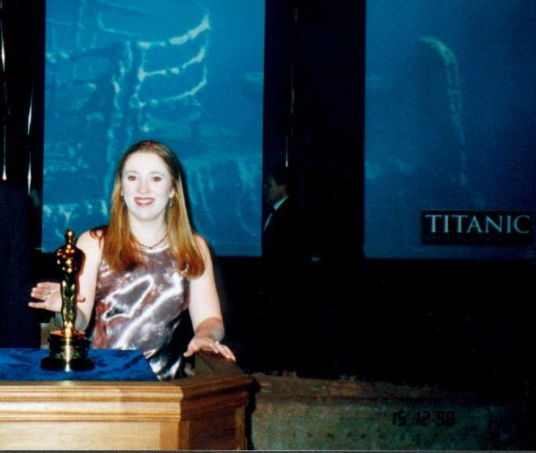
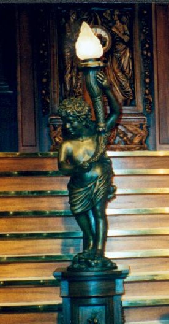
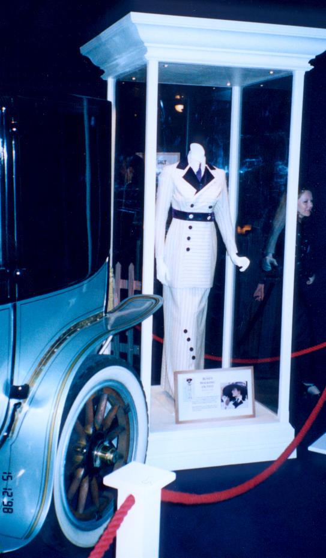
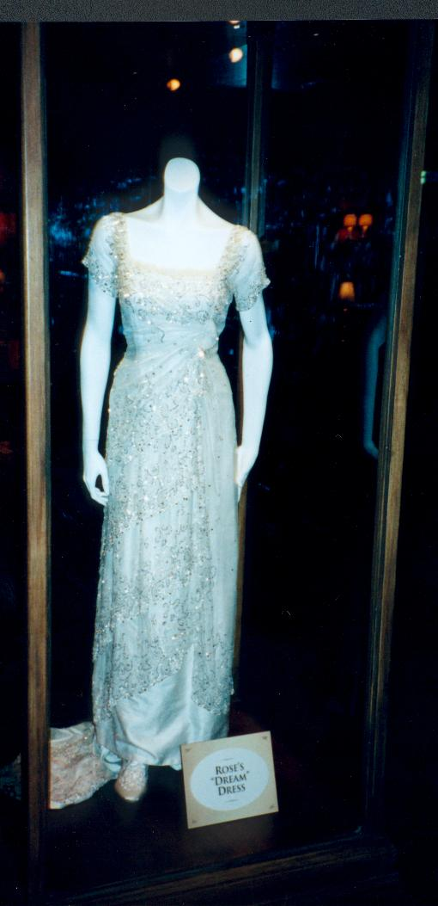
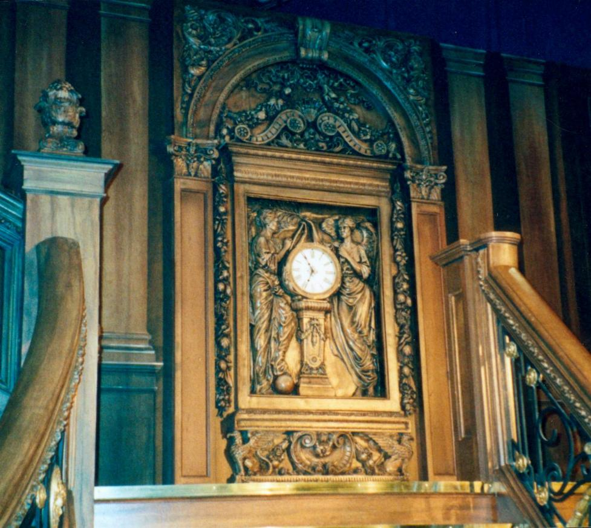
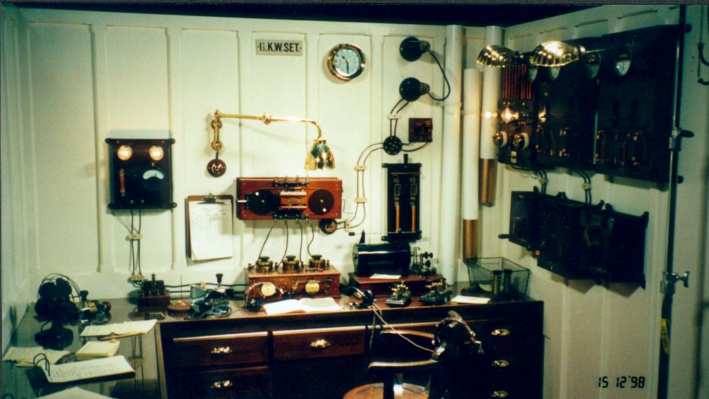
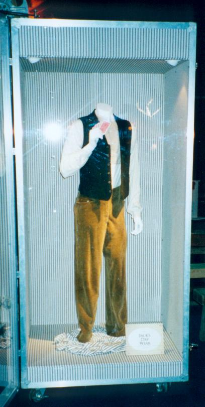
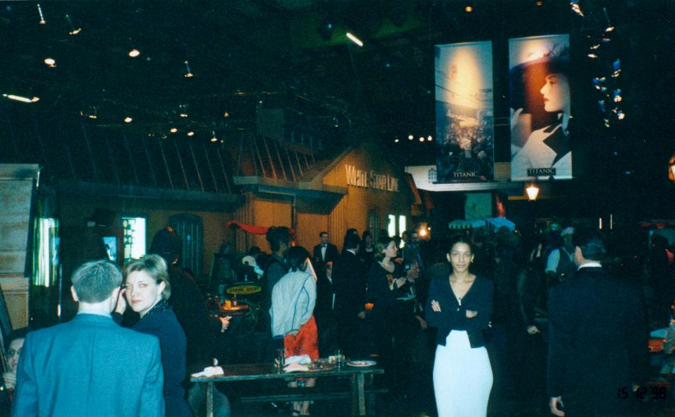
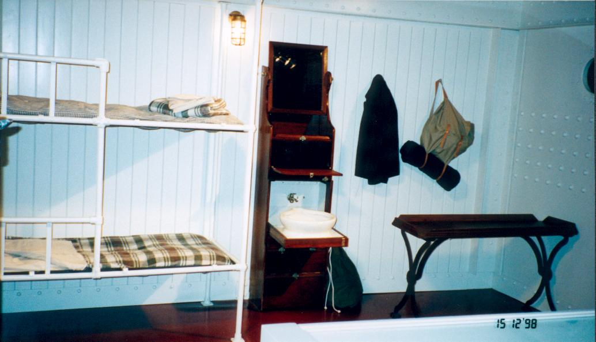